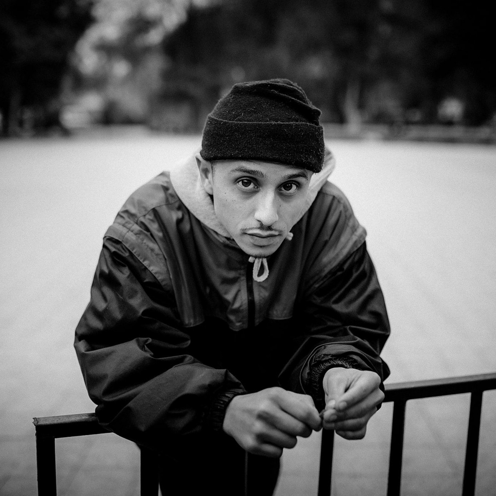

De Antofagasta a Santiago
Nacido en Antofagasta, Jonas Sanche se trasladó con su familia a Santiago durante su infancia. En La Florida comenzó su vínculo con el rap, una etapa que recuerda en la canción «Street-to».
Su recorrido combina trabajos solistas y encuentros con otros artistas. Entre sus colaboradores está Macrodee, su primer productor y responsable de la producción completa de DA KNOWLEDGE.
En una entrevista con LOS40, Jonas contó que ese álbum tomó seis meses de trabajo y que dedicarse por completo a su creación fue clave para terminarlo.

Trayectoria
- 2012 — Verdades, la voz de la avenida: su primer álbum solista reúne 17 canciones basadas en sus experiencias de barrio y su vínculo con el rap. Marca su debut individual después de sus primeros trabajos en grupos y colaboraciones.
- 2013 — Cream Gang: proyecto conjunto con Ceaese que explora ritmos distintos del rap más clásico, con elementos de crunk y trap. Sus 17 canciones combinan las personalidades y estilos de ambos artistas.
- 2016 — Jonasty Tapes: mixtape de 21 temas que recupera material que Jonas tenía guardado. Reúne distintas colaboraciones y funciona como una recopilación de su trabajo entre el debut y su siguiente álbum solista.
- 2019 — 27: su segundo álbum solista llega siete años después del debut. Su elaboración estuvo marcada por responsabilidades familiares, dificultades económicas y viajes por giras, que hicieron más largo y discontinuo el proceso de grabación. Esas experiencias también alimentaron el contenido del disco.
Colaboraciones
Su música reúne a figuras reconocidas del rap chileno y de la escena en español. Entre sus colaboraciones destacan:
- Ana Tijoux: una de las voces chilenas con mayor proyección internacional, invitada en 27.
- Chystemc: referente del rap chileno que lo acompaña desde su álbum debut y en trabajos posteriores.
- Movimiento Original: el grupo chileno aporta su identidad al repertorio de 27 y a otras colaboraciones.
- Lil Supa: el rapero venezolano comparte con Jonas varias colaboraciones y el EP conjunto C.R.A.C.K.
- Dano: figura de la escena del rap en España, participa como invitado en LEGEND.
- Akapellah: una de las voces más reconocidas del rap venezolano, también presente en LEGEND.
- Lord Sucio: rapero chileno de la escena underground, participa como invitado en 27 y JONASTY TAPES 2.